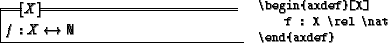

Say \usepackage{zeta} in the preamble of your LATEX
document to include the ZETA style. There are some style options
that can be used, e.g., \usepackage[oxsz]{zeta}. Refer
to Section 3.3 for a list of options.
In a Z document, Z paragraphs can be arbitrarily mixed with
explanatory text. ZETA-Z provides all the environments to
introduce Z paragraphs as they are known from LATEX based
Z representations.
Normal schemata are typeset using the schema environment. Line
breaks have to be explicitly specified with \\.
For generic schemata, the formal generic parameter is written directly
behind the schema name (this is in contrary to the proposed
Standard-Z, where generic parameters are written as
\begin{schema}{G}[X]1:
Abbreviations, given and free types are put in zed environments. In
Standard-Z, schema expressions are treated as expressions, therefore
``'' is not needed anymore. (Nevertheless, it is still supported
for compatibility.):
![\dummy {
\begin{example}
\begin{zed}
T == [ a, b : \num \vert a > b ] \\
EVEN...
...\
[ TYPE ] \\
COLOR ::= red \vert blue \vert yellow
\end{zed}\end{example}}](Z-img6.gif)
Axiomatic definitions are written with the axdef environment.
Formal generic parameters can be specified by an optional environment
parameter. For compatibility with Spivey-Z and Standard-Z, generic
axiomatic definitions can also be typed with the gendef
environment.

For a listing of the full Z syntax and Z symbols in LATEX , see Appendix A and Appendix B.